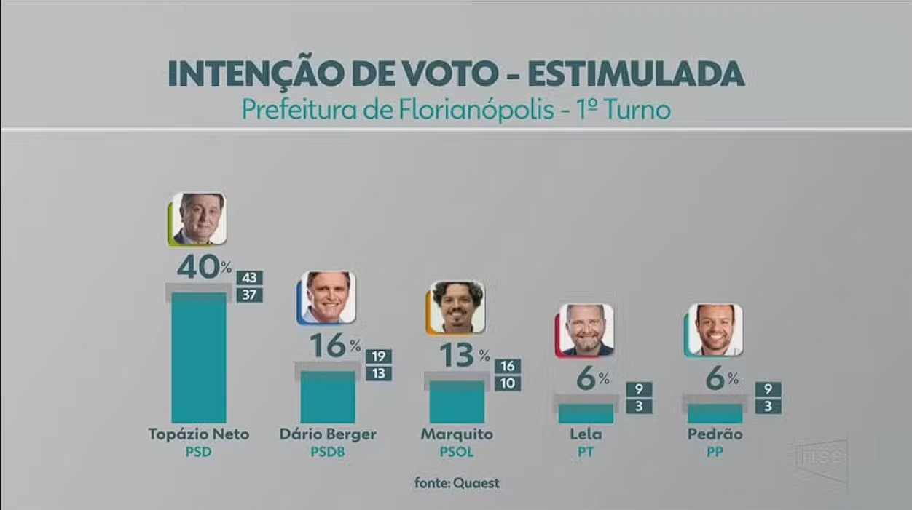

Mais de 100 denúncias de propaganda eleitoral irregular no PA
O Tribunal Regional Eleitoral (TRE) do Pará recebeu de 16 a 25 de agosto, por meio do aplicativo Pardal, 111 denúncias de irregularidades na propaganda eleitoral cometidas por candidatos, partidos, coligações e federações.
Ler mais
João Campos diz que vai ampliar vagas em creches
"Quando eu falei de creche, por exemplo, a gente fez o dobro e agora firmei um compromisso de fazer o triplo, porque o dobro é bom, é importante, mas ainda não é suficiente, então a gente tem que fazer mais."
Ler mais

Florianópolis: Topázio tem 40% das intenções de voto; Dário, 16%; e Marquito, 13%
Pesquisa Quaest divulgada nesta terça-feira (27) com as intenções de voto para prefeito de Florianópolis mostra o prefeito Topázio Neto (PSD) com 40% das intenções de voto, liderando a corrida, seguido por Dário Berger (PSDB) com 16% e Marquito (PSOL) com 13%. Dário e Marquito estão tecnicamente empatados dentro da margem de erro.
Ler mais